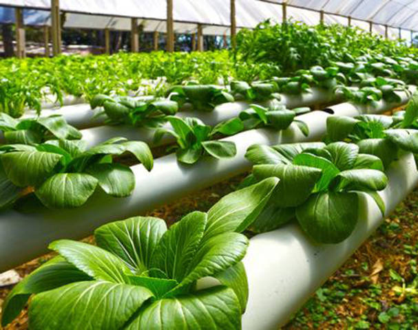
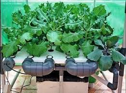

Jenis dan metode-metode Tanaman Hidroponik

Tanaman hidroponik ini tidak kalah sehat dan bergizi, apalagi teknik ini mengutamakan terpenuhinya kebutuhan nutrisi tumbuhan. Apabila kamu ingin menanam tanaman hidroponik di rumah, maka tentukan terlebih dahulu mengetahui jenis tanaman hidroponik.
Pasalnya tidak semua tanaman bisa ditanam menggunakan teknik hidroponik. Jenis tanaman hidroponik akan menghasilkan jenis tanaman yang bebas dari hama dan penyakit. Berikut jenis tanaman hidroponik
Hidroponik Sayuran
1. Sawi Hijau
Sawi termasuk tanaman yang tahan terhadap hujan sehingga bisa tumbuh sepanjang tahun. Sayuran satu ini juga dapat ditanam dimanapun.
Tanaman ini sangat laku di pasaran sehingga para petani banyak yang menggunakan teknik hidroponik untuk membudidayakannya. Jenis tanaman hidroponik ini sangat cocok dan bisa kamu coba tanam di rumah.

2. Brokoli
Jenis tanaman hidroponik ini mirip dengan kol. Brokoli menyimpan banyak nurtrisi yang diperlukan tubuh. Jenis tanaman hidroponik ini biasanya tumbuh di dataran tinggi. Namun, sekarang brokoli dapat ditanam di dataran rendah menggunakan teknik hidroponik.

3. seledri
Daun seledri adalah jenis tanaman hidroponik sayuran yang sering ada di setiap rumah. Jenis tanaman hidroponik ini mempunyai bau yang khas dan mempunyai manfaat yang sangat banyak.
Seledri ditanam secara hidroponik menggunakan sistem sumbu atau wick. Selain menggunakan sistem sumbu, seledri juga bisa ditanam dengan sistem hidroponik lain seperti, rakit apung.
4. Bayam
Bayam memang mudah ditemukan, namun ada baiknya jika kamu membudidayakan bayam sendiri di rumah. Dengan teknik hidroponik, bayam yang kamu dapatkan akan lebih bernutrisi dan tentunya kandungan bayam lainnya yang luar biasa.
Adapun beberapa manfaat hidroponik yang bisa di dapatkan, diantaranya:
- Menghasilkan kualitas tanaman yang lebih baik.
- Tanaman dapat terhindar dari hama.
- Penggunaan pumuk menjadi lebih hemat.
- Hemat tempat, karena tidak memerlukan lahan tahan yg luas untuk menana tanaman.
- Tanaman dapat tumbuh dengan cepat.
- Hemat tenaga dan waktu.

Kelebihan dan Kekurangan Hidroponik
Kelebihan hidroponik
Beberapa keuntungan yang bisa di dapatkan dari tanaman hidroponik misalnya seperti:
Produksi tanaman lebih tinggi jika di bandingkan dengan metode tanam dengan tanah.
Tanaman dapat terbebas dari penyakit dan juga hama.
Pemakaian pupuk lebih hemat dan tumbuh tanaman lebih cepat.
Dapat mengganti tanaman dengan mudah.
Mempermudah pekerjaan maupun perawatan tanaman.
Tanaman akan memberikan hasil secara berkelanjutan.
Kekurangan hidroponik
Beberapa kekurangan dai metode tanam hidroponik, diantaranya:
Memerlukan biaya lebih di awal-awal, terutama jika berencana untuk menanam tanaman secara hidroponik dalam sekala besar.
Membutuhkan alat-alat khusus. Alat-alat untuk metode tanam hidroponik masih jarang di temukan di sekitar kita.
Memerlukan pengetahuan dan keterampilan khusus karena metode tanamnya tidak pada lahan tanah.
Dan juga membutuhkan ketelitian yang lebih, karena nutrisi untuk tanaman harus benar-benar di awasi secara cermat. (Baca Juga: Pengertian kultur jaringan dan manfaatnya terlengkap).